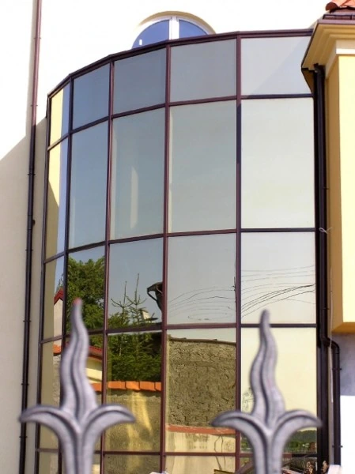
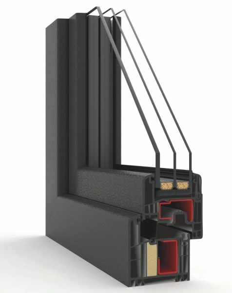
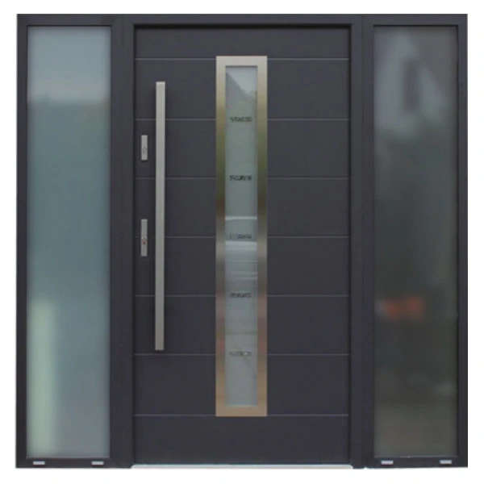
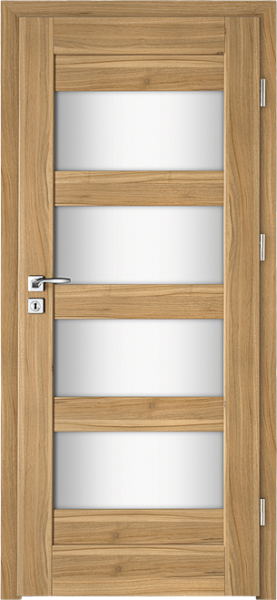
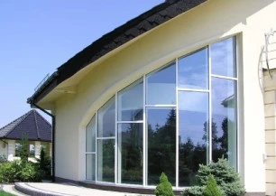
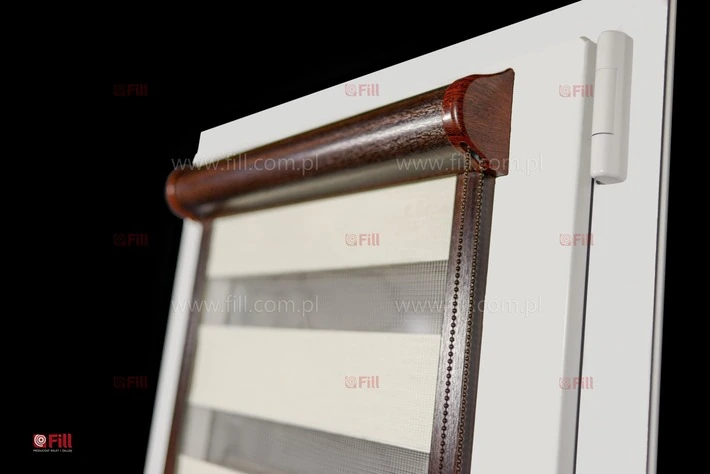
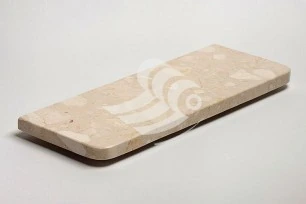
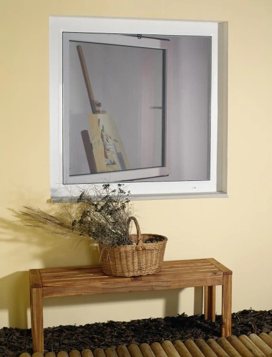
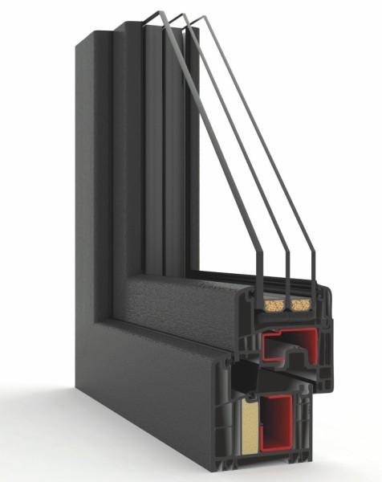

Okna i drzwi w szerokim wyborze
WOL-BUD to firma Wojciecha Wolańskiego, założona w 1995 roku. Oferuje okna PCV i aluminiowe, drzwi, bramy garażowe, rolety, parapety, doradztwo i montaż.
Od 1995 roku
WOL-BUD Wojciech Wolański
WOL-BUD to doświadczona firma, która na rynku okien i drzwi działa już od 25 lat – została założona przez Wojciecha Wolańskiego w 1995 roku. Spośród naszych Klientów wyróżniamy zarówno inwestorów indywidualnych, jak również instytucje. Posiadane referencje, jak też ogromna liczba kontrahentów z polecenia, to najlepszy dowód na najwyższą jakość naszej oferty.
Katalog i usługi
Czego szukasz?
Wybierz kategorię produktów lub sprawdź nasze usługi montażowe i serwisowe.

Okna PCV firmy Domel
Zobacz ofertę ↗

Drzwi zewnętrzne
Zobacz ofertę ↗

Drzwi wewnętrzne
Zobacz ofertę ↗
Bramy garażowe
Zobacz ofertę ↗

Stolarka aluminiowa
Zobacz ofertę ↗

Rolety
Zobacz ofertę ↗

Parapety i blaty
Zobacz ofertę ↗

Moskitiery
Zobacz ofertę ↗
Polecane produkty
Warto sprawdzić

Infinity Passive 83MD
Okna Domel Infinity Passive są zaprojektowane dla osób ceniących najwyższą jakość okien zarówno pod względem parametrów technicznych, jak również wyposażenia.
Zobacz produkt ↗Wikęd – drzwi zewnętrzne stalowe
Uwzględniając stosunek jakości do ceny uważamy, że drzwi stalowe firmy Wikęd plasują się w ścisłej czołówce producentów drzwi w całym kraju.
Zobacz produkt ↗
Kompleksowa obsługa
Zobacz wszystkie usługi ↗
Usługi montażowe i serwisowe
Dostawcy
Partnerzy
Kontakt
Chętnie doradzimy
Zadzwoń albo zajrzyj do naszych salonów sprzedaży w Tarnowie i Radłowie. Umówimy pomiar i odpowiemy na Twoje pytania.
Zadzwoń
534 091 021
- E-mail:biuro@wol-bud.com.pl
- Czynne:Poniedziałek – piątek 09:00–17:00
- Soboty:09:00–13:00 (Tarnów i Radłów)
WOL-BUD Wojciech Wolański
Sprzedaż i profesjonalny montaż stolarki okiennej i drzwiowej od 1995 roku.
Salony sprzedaży
Pełny opis salonów i ekspozycji ↗
Salon Tarnów-Chyszów
ul. Giełdowa 5 (przy placu targowym), 33-100 Tarnów
Tel. 14 626 80 32 · Kom. 534 091 021
Nawiguj w Google Maps ↗
Salon Tarnów
ul. Szkotnik 2b, 33-100 Tarnów
Tel. 14 628 84 90 · Kom. 693 870 505
Nawiguj w Google Maps ↗
Punkt Radłów
ul. Leśna 17a, 33-130 Radłów
Tel. 14 678 23 65 · Kom. 609 734 290
Nawiguj w Google Maps ↗